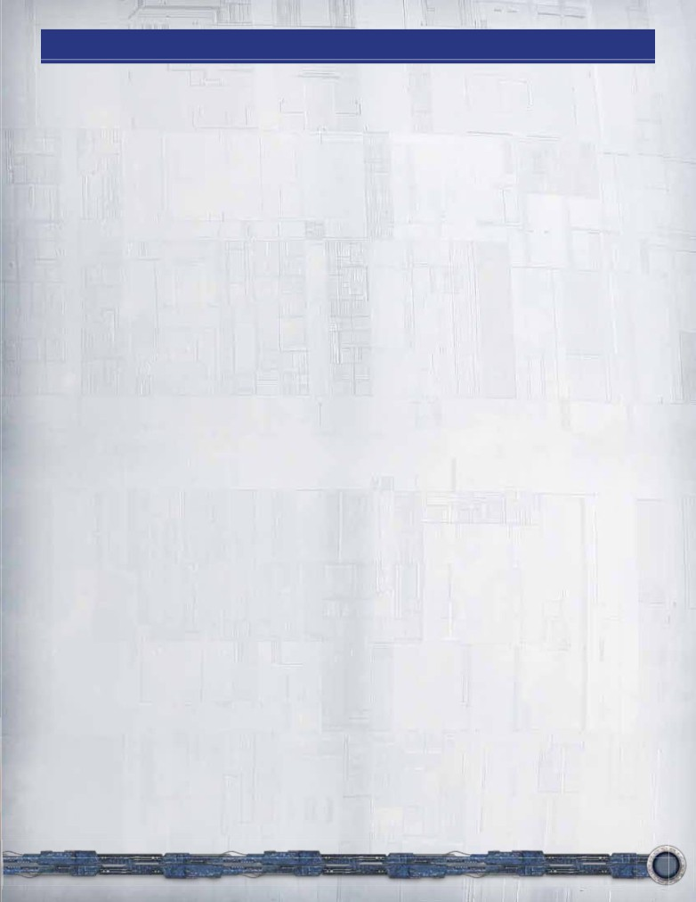
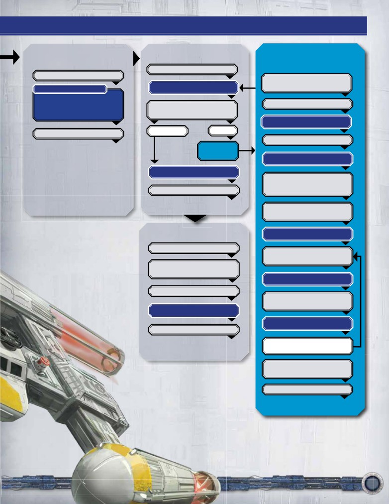

Game Design: Eric M. Lang
Additional Game Design and Development:
Erik Dahlman and Nate French
Graphic Design: WiL Springer, with Chris Beck, Shaun
Boyke, Taylor Ingvarsson, Dallas Mehlhoff, Mercedes
Opheim, Brian Schomburg, and Michael Silsby
Managing Art Director: Andrew Navaro
Art Direction: Zoë Robinson
FFG Licensing Coordinator: Deb Beck
Lucas Licensing Senior Manager: Chris Gollaher
Creative Content Development: Erik Dahlman, Nate
French, and Brady Sadler
Rules: Nate French and Christian T. Petersen
Editing: Christian T. Petersen, Michael Hurley, Nate
French, and David Hansen
Proofreading: David Hansen
Cover Art: Michael Komarck
Production Manager: Eric Knight
Producer: Nate French
Executive Game Designer: Corey Konieczka
Executive Game Producer: Michael Hurley
Publisher: Christian T. Petersen
Playtesters: Nick Agranoff, Brad Andres, Greg Atkinson,
Adam Baker, Jonathan Benton, Kathy Bishop, Bryan
Bornmueller, Nathan Bradley, Patrick Brennan, John M.
Bruno, Ted Budzinski, Erick Butzlaff, Daniel Lovat Clark,
Tony Crawford, Eric Damon, Adam DeWulf, Wes Divin,
Matt Downs, Richard A. Edwards, Jeff Farrell, Alex
Filewood, Evan Fitzgerald, Kris Fletcher, Wade Freeman,
Chris Garder, Chris Gerber, Caleb Grace, Joshua B. Grace,
Zachary Graves, Patrick John Haggerty, Evan Hall, Tristan
Hall, David Hansen, Steve Horvath, Tim Huckelbery, Rob
Kouba, Mike Kutz, Sam Lawton, Will Lentz, Matthew Ley,
Mike Linnemann, Jay Little, Lukas Litzsinger, Darryl Lloyd,
Jesse Mariona, Darrick McGuire, Francesco Moggia, Kathy
Molineaux, Neil Molyneaux, Christian Na, Mark O’Connor,
James Plank, Aaron Ross Powell, Rick Reinhart, Brian
Schomburg, Kevin Scull, WiL Springer, Jeremy Stomberg,
Damon Stone, Tyler Stratton, Jennifer Summerhill, Kyle
Szklenski, Kevin Tomczyk, Vince Tonelli, Benjamin Tully,
Jason Walden, Becky Zamborsky, Steve Zamborsky, Brett
Zeiller and Matt Zipf
© 2012 Lucasfilm Ltd. & TM. All rights reserved. © 2012
Fantasy Flight Publishing, Inc. Fantasy Flight Games, Fantasy
Flight Supply, the FFG Logo, Living Card Game, LCG, and the
LCG Logo are TM or ® of Fantasy Flight Publishing, Inc. All
rights reserved.
®
2
Game Overview
Star Wars: The Card Game is a game for two players.
Focus tokens track which cards have been
One player fights for the light side of the force opposing
used to perform game play functions.
the dominion of the dark side of the force as represented
by the second player.
Damage tokens track the
This rulebook sometimes refers to the light side of the
amount of damage a card has suffered.
Force as “ls” and to the dark side of the Force as “ds”.
Box Contents
Shield tokens track which cards are protected
by defensive shields.
-
This Rulebook
-
240 Cards, consisting of:
-
117 light side cards
-
117 dark side cards
The Death Star dial (2 pieces)
represents the oppression and
-
3 Force cards (dark side)
momentum of the dark side of the
-
3 Force cards (light side)
Force.
-
1 Death Star dial token (front)
-
1 Death Star dial token (back)
-
1 Plastic dial connector (in 2 pieces)
-
42 Damage tokens (1’s and 3’s)
-
1 Balance of the Force token
-
10 Shield tokens
-
44 Focus tokens
Assembling the
Death Star Dial
Component Overview
1
The following is a visual guide to the components found
in the Star Wars: The Card Game Core Set:
Light side cards represent the various
units, events, enhancements, and objectives
3
that are used by the light side of the Force.
4
2
Dark side cards represent the various units,
Before starting the first game, assemble the
events, enhancements, and objectives that are
Death Star dial by following the steps below:
used by the dark side of the Force.
1. Locate the Death Star back disk (showing a
red face with black numbers).
Force cards (dark and light side)
designate which unit cards are
2. Place the Death Star front disk (showing an
committed to sway the balance of the
image of the Death Star) directly on top of the
Force in their controller’s favor.
Death Star back disk, so that the black numbers
of the back disk can show through the small
window of the front disk.
The Balance of the Force token
3. Press the larger piece of the plastic dial
provides an advantage to the player
connector through the center hole of both
who manages to swing the Balance
Death Star disks.
of the Force to his side.
4. Press the smaller piece of the plastic dial
connector tightly to its counterpart, securing
the cardboard pieces together.
6
Affiliations
Card Identification
Each side of the Force recruits its allies from three
Every card is identified by the following graphics in its
different affiliations (for a total of six affiliations).
lower-right corner.
The light side of the Force finds strength in the rebel
alliance who bravely defies the Empire and its evil
Emperor. It finds cunning and intelligence in tough-talking
1
4
but noble-hearted smugglers and spies. In the silent vigil
2
and careful planning of those that remain of the Jedi
3
Order, it finds the seeds of hope.
1. This symbol represents the product from which the
The dark side of the Force has brought the galaxy to
card originated (in this case, from the Star Wars: The
its knees by the might and firepower of the imperial
Card Game Core Set).
navy. It harnesses the cruelty and ambition of the
galaxy’s scum and villainy. By the evil schemes and
2. The objective set to which the card belongs (each
dark powers of Emperor Palpatine and his sith, eternal
objective set has a unique number).
dominance seems within the dark side’s grasp.
3. The card’s sequential number within its objective set.
Each of these affiliations is identified in Star Wars: The
Card Game by the following icons:
4. The card’s unique number.
The name of an objective set is the same as the name
Rebel Alliance (LS)
of its objective card.
Smugglers and Spies (LS)
Jedi (LS)
Imperial Navy (DS)
Scum and Villainy (DS)
Sith (DS)
Some cards have no affiliation and are considered neutral.
For example, the above six cards comprise the
objective set “A Hero’s Journey.”
Objective Sets
Starting Decks
Star Wars: The Card Game is a Living Card Game® (LCG).
LCGs are customizable; players may build their own decks,
The Star Wars: The Card Game Core Set includes four
with cards from this Core Set, or from those in separately
ready-to-play decks, each built around one LS or DS affiliation
sold expansion sets.
(Rebel Alliance, Jedi, Imperial Navy, and Sith). See “2. Select
and Create Decks” on page 10 for details on how to
Unlike most customizable card games, where players
construct each of these four decks.
construct their decks by adding single cards one by one,
Star Wars: The Card Game uses a unique approach to
deck construction with obJective sets.
An objective set always consists of six cards, as follows:
-
One objective card, and
-
Five other cards
An objective set’s five other cards are a combination of
unit, event, fate, or enhancement cards (some objective
The Star Wars: The Card Game Core Set is designed
sets include multiple copies of the same card).
as a stand-alone product, providing many hours of
entertainment as players explore the various strategies
The cards of an objective set must always be placed
of the cards provided. When players are ready for
in the same deck together. Individual cards cannot be
more options, they can customize their own decks (see
removed from or added to an objective set.
“Custom Decks” on page 28).
7
Card Anatomy
obJective cards
obJective cards represent mission
s,
ideologies, strategies, or important
narratives that a player is pursuing
or
6
protecting.
3
4
Each player seeks to destroy his
opponent’s objectives to deprive him of
their benefits and to win the game.
8
7
1
unit cards
3
unit cards represent the characters,
groups, vehicles, droids, and creatures
2
a player may use against his opponent.
They are played from a player’s hand
into his play area, are used
to attack and defend in
5
6
4
engagements, and can
be committed to the
Force struggle.
8
7
1
3
enhancement cards
enhancement cards represent
locations, items, skills, weapons, and
2
conditions. Some enhancement cards
enhance another card, while some
enhance other game elements, such
as a play area or a deck.
4
8
8
affiliation cards
A player’s affiliation
card indicates which
affiliation he is using as the
foundation of his deck. It
also provides one resource
of that affiliation’s type
and presents a helpful
3
reference to the phases of
6
a player’s turn.
8
Key
1. Cost
6. Resources
event cards
2. Force icons
7. Damage capacity
1
3. Title
8. Text
2
4. Affiliation symbol
9. Edge battle priority
5. Combat icons
4
3
3
fate cards
fate cards represent
9
8
unpredictable twists that
2
can swing the course of a
event cards represent
battle. Fate cards can only
8
maneuvers, tactics, special
be used during an edge
powers, disasters, traps,
battle (see “4. Fight Edge
and other sudden effects.
Battle” on page 18).
An event card is played from
a player’s hand and typically
incurs a resource cost.
9
Setup
To prepare for a game of Star Wars: The Card Game,
instances of objective sets 18 and 36 are found in the
players must take the following steps:
Core Set):
1. Select Force Allegiances
Jedi Deck
Objective sets: 1, 2, 3, 4, 5, 6, 7, 18
Players agree on who will represent the dark side of the
Force (i.e. be the DS player) and who will represent the
Rebel Alliance Deck
light side of the Force (i.e. be the LS player).
Objective sets: 8, 9,10, 11, 12, 13, 14, 18
If players cannot agree they decide randomly.
Sith Deck
Objective sets: 19, 20, 21, 22, 23, 24, 25, 36
Each player then takes the three Force
cards corresponding to his side of the Force
Imperial Navy Deck
and places them within his reach.
Objective sets: 26, 27, 28, 29, 30, 31, 32, 36
2. Select and Create
When playing one of these pre-constructed decks, a
Decks
player should use the affiliation card that matches the
Each player now chooses which deck he will play.
affiliation of his deck.
First-time players should play with the pre-assembled
3. Reveal Affiliation Cards
decks that come in the Core Set. The DS player secretly
Each player reveals his affiliation card, placing it
chooses either the Imperial Navy or the Sith deck, and
prominently in his play area.
the LS player secretly chooses either the Rebel Alliance
or the Jedi deck. Each player also takes the affiliation
A player’s affiliation card is in play (see “In Play and Out
card associated with that deck.
of Play” on page 27) and may be referenced by card
abilities. A player’s affiliation card cannot be removed
The pre-assembled decks are created by gathering the
from play for any reason.
following objective sets into 48 card decks (note that two
4. Set Balance of the Force
Place the Balance of the Force token prominently in
the game area with its light side faceup.
A Matter of Focus
The Balance of the Force Token
A number of effects and actions (both
voluntary and involuntary) in Star Wars:
The Card Game cause focus tokens
to be placed onto cards.
A card’s controller may focus a card to perform
an ability or take some other action. When doing
Light side
Dark side
so, a focus token is placed on the card.
A card without focus tokens is considered ready.
5. Prepare Decks
Each player now removes all objective cards from
A card with one or more focus tokens is
his deck and shuffles them facedown into a separate
considered exhausted. A player cannot focus an
obJective deck. After doing so, each player will have
exhausted card.
two decks: an objective deck containing his objective
cards and a command deck containing his other
Some card abilities or game rules require one or
cards.
more focus tokens to be placed onto a card. This
does not cause the card to focus (i.e. trigger an
Unless stated otherwise, when a player is instructed
ability or take some other action) but it does cause
to “draw” one or more cards, he does so from his
the card to become exhausted.
command deck. Likewise, any reference to a player’s
“deck” means his command deck, unless stated
Focus tokens are primarily removed from cards
otherwise.
during the refresh phase of a player’s turn, but
some card effects also remove focus tokens.
Each player then places his command deck and his
objective deck in his play area.
10
10. Reveal Objectives
The DS player puts his three chosen objective cards into
play one at a time by flipping them faceup in the order of
his choosing, resolving any relevant interrupt or reaction
card effects on one objective card before putting the next
into play (see “Card Abilities” on page 24).
Then the LS player puts his three chosen objective cards
into play one at a time by flipping them faceup in the
order of his choosing, resolving any relevant interrupt or
reaction card effects on one objective card before putting
the next into play.
The three objective cards faceup in a player’s play area, are
his current obJective cards.
The game is now ready to begin.
The Golden Rule
Any text, whether on a card or in this rulebook, that
uses the word “cannot” is absolute and cannot be
countermanded by another effect. In the absence
of the word “cannot,” when text on a card directly
contradicts the text in this rulebook, the card text takes
precedence.
Player Area
nent
Units
Force Cards
Victory Pile
hancements
Command
Command Deck
Deck
Discard Pile
11
Playing the Game
Star Wars: The Card Game is played over a number of
2. Refresh Phase
player turns. After the first player has taken his turn,
The active player takes the following steps in order:
his opponent takes a turn. Players take alternating turns
in this way until a player wins the game (see “Winning
1. He removes one focus token from each card in
the Game” on page 15).
his play area. (Any effect with the text “after you
refresh” can be used after completing this step.)
Each player turn consists of the following phases:
Exception: During his first turn only, the LS player
1. Balance
does not take this step of the refresh phase.
2. Refresh
3. Draw
2. He removes all shield tokens from each card in
4. Deployment
his play area.
5. Conflict
3. If he has fewer than three current objective
6. Force
cards, he replaces each missing objective card
by taking the top card of his objective deck and
The DS player always takes the first turn of the game.
putting it into play as a current objective card. If
the objective card just put into play has a “When this
Phase Detail
card enters play ...” (or similar) effect, this effect is
The following section describes each phase of a player
immediately resolved.
turn in detail. The player currently taking his turn is
referred to as the active player.
If multiple objective cards need to be replaced, they
are put into play, resolving any “When this card
1. Balance Phase
enters play” effects, one at a time.
The balance phase is resolved differently depending on
After taking these steps, the active player proceeds to
which player is the active player.
the draw phase.
ds player is the active player
3. Draw Phase
The DS player advances the Death Star dial by one point
(for example, from “3” to “4”).
At the start of the draw phase, the active player may
choose one card in his hand and discard it.
Then, if the Balance of the Force is with
the dark side (i.e., the token shows the
After he has discarded a card, or chosen not to, the
DS faceup), the DS player advances the
active player must return his hand to a number of cards
Death Star dial one additional point.
equal to his current reserve value, drawing from his deck
or choosing and discarding from his hand as necessary.
Example: On the first turn of the game, the Balance of
the Force token shows the light side faceup. During his
At the start of the game, each player’s reserve value is six,
balance phase, the DS player therefore advances the
though card effects may increase or decrease this value.
Death Star dial only one step, from zero to one.
Example: The active player has eight cards in hand
If the Death Star dial reaches or exceeds 12 at any time,
at the start of his draw phase. He must choose
the game immediately ends and the DS player wins.
and discard two cards to return his hand size to his
reserve value of six.
The DS player then proceeds to the refresh phase.
On his next turn, he has three cards in hand at the
ls player is the active player
start of his draw phase. First, he has the option to
If the Balance of the Force is with the light
discard one of his cards. He chooses to discard a
side (i.e., the token shows the LS faceup), the
card, bringing his hand size down to two cards. Then
LS player may deal one damage to any one DS
he must draw four cards from his deck to return his
current objective. (If the Balance of the Force
hand size to his reserve value of six.
is with the DS, nothing happens.)
The active player then proceeds to the
If this destroys the objective card (see “Damage” on page
deployment phase.
21), the LS player places it in his victory pile. The LS
player immediately wins if there are three or more
objective cards in his victory pile.
The LS player then proceeds to the refresh phase.
12
discarding
The term “discarding” describes the act of removing a
card from a player’s hand, deck, or play area (depending
Term Summary
on the discard instructions) and placing it faceup on the
top of his command deck discard pile. Each player has his
When playing Star Wars: The Card Game, or reading
own discard pile.
this rulebook, players should keep the following important
terms in mind:
If multiple cards are discarded simultaneously, their
owner determines the order in which they are placed in
Active player describes the player currently taking his turn.
the discard pile.
Attacking player describes the active player currently
engaging an enemy objective card during his conflict phase.
If a token is discarded or removed, it is returned to the
Controller describes the player who currently controls the
token pool.
card in question.
Current objective card describes one of a player’s faceup
If a Force card is discarded, it is returned to its owner’s
objective cards in his play area.
supply of available Force cards.
Defending player describes the player defending against
the attacking player.
4. Deployment Phase
DS is an abbreviation for “The dark side of the Force.”
During the deployment phase, the active player is able
Enemy describes the opposing player and the game
to play unit and enhancement cards from his hand to
elements he controls (cards, decks, his play area, etc.).
his play area. All cards played from a player’s hand must
Engagement describes the process of resolving an attack.
be paid for by paying their relevant resource costs (see
Exhausted describes a card with one or more focus
“Resources” on page 16).
tokens on it.
The active player may play as many unit and
Focus describes the action of placing a focus token on a
enhancement cards during his deployment phase as
ready card to trigger a card or game effect.
he desires, as long as he is able to afford their costs.
Friendly describes one or more game elements under
If a player is unable to pay a card’s resource cost, he
a player’s control (such as his cards, his decks, his play
area, etc).
cannot play the card.
Hand describes the cards held by a player, which are kept
Each time the active player plays a unit or enhancement
hidden from his opponent.
card, it is considered an action (see “Actions” on page
LS is an abbreviation for “The light side of the Force.”
24). Each action must be fully resolved before the next
Owner describes the player whose deck held the
can begin. When a card enters play, it is immediately
referenced card at the start of the game.
eligible to perform any permitted game function (such as
Play describes an action where a player pays the resource
providing resources, or using a card ability) that same turn.
cost of a card in hand and transfers it into play (for a unit
card or an enhancement card) or resolves its effects and
then discards it (for an event card). (See “In Play and Out of
Play” on page 27).]
Play area describes the section of the table where a
player keeps his decks, tokens, and cards.
Put into play describes an effect that takes a card from
an out of play state and transfers it directly into play
without paying its resource cost. Objective cards are put
into play from their owner’s objective decks.
Ready describes a card without any focus tokens on it.
Reserve value describes the number of cards a player
must draw up or discard down to during his draw phase.
Shielded describes a unit or objective card with one or
more shield tokens.
Turn is an alternative term for player turn; it describes
the six phases the active player must perform.
Unshielded describes a unit or objective card without any
shield tokens.
Victory pile describes a player’s collection of destroyed
enemy objective cards.
13
playing unit cards
5. Conflict Phase
Unit cards are always played faceup into their owner’s
During his conflict phase, the active player attempts to
play area.
destroy enemy objectives. He may engage one or more
of the enemy’s current objective cards, one at a time.
playing enhancement cards
The active player may decide to not engage and instead
Enhancement cards are typically used to enhance unit
proceed directly to the Force phase.
cards, but other game elements (such as a player’s play
area, an objective card, an affiliation card, or even a deck)
Each engagement is declared and resolved one at a
can be enhanced. The text of each enhancement card
time. Each current enemy objective card may only be
designates the aspect of the game it enhances while it is
engaged once per turn.
in play.
After each engagement, the active player may engage
When playing an enhancement card that includes the text
another current enemy objective card. If he decides not
“Enhance [card type],” place it partially beneath a card
to, or if he has already engaged each current enemy
in play of the specified type, ensuring the enhancement
objective card, play proceeds to the Force phase.
card is still clearly visible. The enhancement card is now
attached to that card.
Exception: During the DS player’s first turn, he cannot
declare any engagements. He instead must skip this phase
When a card leaves play, any enhancements attached
entirely.
to it are immediately discarded to their owner’s discard
pile. There is no limit to the number of enhancements
For detailed rules on how to resolve an engagement,
that can be attached to a card or game element.
see “Resolving an Engagement” on page 18.
6. Force Phase
The Force phase consists of the following two steps,
always taken in this order:
1. Force Commitment
2. Force Struggle
force commitment
Example: The LS player plays the “Trust Your
Feelings” enhancement card, attaching it to the
The active player may commit any unit cards in his play
“Mon Mothma” unit card.
area to the Force (except for a unit card that is already
committed to the Force). A committed unit is acting
Note: While most enhancements are played on friendly
or being used by its side away from the front lines in
cards, some should be played on enemy cards (or other
order to further the cause of the light or dark side of
enemy elements, such as the opponent’s game area).
the Force. Meditation, study, training, recruitment, and
Players should be sure to return any enhancement cards
transportation of key figures are some examples of the
to their respective owners at the end of the game.
functions a committed unit may be serving.
If an enhancement instructs its player to enhance a
To commit a unit, a player takes one of his available
play area, he places it faceup in the specified player’s
Force cards and places it underneath the unit card (as
play area.
he would attach an enhancement card) to indicate this
unit card is now committed to the Force.
If an enhancement instructs its player to enhance a
card type not in play (or other game element that is not
When a unit that is committed to the Force leaves
in the play area), that enhancement cannot be played.
play, the attached Force card is returned to its owner’s
supply of available Force cards.
After the active player has concluded his deployment, he
proceeds to the conflict phase.
14
Force cards are not considered “cards” and are never “in
play.” They act only to identify which units are committed to
Winning the Game
the Force.
The following describes the victory conditions of
Note: Only the active player may commit units to the
Star Wars: The Card Game.
Force during this step. His opponent must wait until the
Force phase of his own turn.
light side victory
The LS player wins the game immediately when one of
Force Card Limits
the following occurs:
Each player begins the game with three Force cards.
After a player has attached all three of his Force cards to
-
Three or more DS objective cards are
his units, he cannot commit additional units to the Force
destroyed.
until one or more of his Force cards become available.
-
The DS player must draw a card from his
command deck or objective deck, but that deck
Each player is strictly limited to three Force cards.
is empty.
Committed to the Force
After a unit is committed to the Force, it is able to
dark side victory
participate in Force struggle (see below).
The DS player wins the game immediately when one of
the following occurs:
However, such commitment comes with a burden. When a
unit committed to the Force is focused to strike during an
-
The Death Star dial advances to 12.
engagement (as either an attacker or a defender), that unit
receives two focus tokens instead of one. (See example on
-
The LS player must draw a card from his
page 22.)
command deck or objective deck, but that deck
is empty.
A unit that is committed to the Force remains committed
as long as it remains in play. Players may not voluntarily
remove Force cards from their units.
force struggle
Each player now adds the number of Force icons on
his ready units that are committed to the Force. This
number is his force total.
The player with the highest Force total flips the Balance
of the Force token so that his side of the Force faces
up. In the event of a tie, the Balance of the Force token
remains as it is.
Important: Force icons on enhancements are
not
counted towards a player’s Force total, even if
an
enhancement is attached to a unit that is committed to
the Force. Player’s count only the Force icons
on the unit
card itself.
After the active player completes his Force phase, his
turn is over, and his opponent begins a new
turn.
While playing the game, the Balance of the Force is
considered to be with the side (light side or dark side) that
is currently facing up on the Balance of the Force token.
15
Resources
When playing Star Wars: The Card Game, players are
Note: A resource-providing card that has generated
frequently required to spend resources in order to play
resources, will have been given one or more focus
cards or use abilities.
tokens, and therefore is exhausted (i.e. no longer
ready). A player may not generate resources from an
A card’s resource cost is found in its
exhausted card.
upper left corner (only unit, event, and
enhancement cards have a resource
spending resources
cost).
After a player has generated sufficient resources from
one or more resource-providing cards, he plays the card
When a player wishes to play a card
he revealed or executes the ability he designated. The
or is required to spend resources to
generated resources cannot pay for multiple cards
execute an ability, he first reveals the
or abilities. Any resources generated in excess of the
card or designates the desired ability to
resource cost are lost.
the opponent. Then he generates the
required number of resources from resource-providing
Example: The active player wishes to play a unit card
cards in his play area to pay for the cost. After doing
with a resource cost of “3.” To pay for the card, he
so, he plays the card or executes the designated ability.
generates two resources from a ready objective card
If a player cannot generate enough resources to pay the
with a resource value of “2” (placing two focus tokens
resource cost, the card cannot be played (it returns to
on that objective card), and one resource from another
his hand) nor the designated ability executed.
objective card with a resource value of “3” (placing
one focus token on the card). Though he could have
A player’s affiliation card, his objective cards, and
generated two additional resources from the latter
some unit and enhancement cards have a resource
objective card, those resources would have been
value, marked by a number inside the card’s printed
wasted. Having generated enough resources to pay the
resource icon.
unit card’s resource cost, he plays the unit card.
atch
resource m
When a player plays a card from his hand, at least one
of the resource-providing cards used to generate the
required resources must match the affiliation of the
Resource
Icon
card being played. This is called a resource match.
Some cards have a neutral affiliation. The cost of playing a
neutral unit, enhancement, or event card does not require
a resource match. In addition, neutral resource-providing
cards do not qualify as a resource
match for any affiliation.
A ready card with a resource value can generate
Cards with a resource cost
resources up to that value to help pay a resource cost.
of “0” do not require a
resource match to play.
generating resources
A player generates resources from one of his ready,
See page 17 for several
resource-providing cards by placing a number of focus
detailed examples of
tokens on the card, up to its resource value. He
spending resources to play
generates one resource for each focus token placed.
cards.
Example: A ready objective card with a resource
value of “3” can provide either one, two or three
resources towards paying a resource cost. To
generate the resources, the card’s controller must
place a number of focus tokens (no more than
three) on the card, generating one resource for
each token placed.
A player may generate resources from multiple ready
and resource-providing cards in his play area to gather
sufficient resources to pay a required resource cost.
16
Resources Example #1
The LS player wants to play the card “Trust Your Feelings” (Jedi,
cost 2).
He has three ready, resource-providing cards in his play area: two
copies of “Cloud City Casino” [Neutral, 1 resource) and the “Forgotten
Heroes” objective card (Jedi, 1 resource).
He could generate one resource each from both “Cloud City Casino”
cards. However, neither neutral resource would have the resource
match required to play a Jedi affiliation card. Instead, he focuses
one “Cloud City Casino” (generating one neutral resource) and the
“Forgotten Heroes” objective card (generating one Jedi resource).
With two resources, including one that matches the affiliation of
“Trust Your Feelings,” the LS player is able to pay the cost of the card
and play it.
1
ion,” and “Vader’s
, and the objective
d” (Sith,
2
om his affiliation card and
loitation,” placing one
iliation card provides the
h card.
3) Next, he plays “Interrogation” (Sith, cost 2) by generating
3
two resources from “The Heart of the Empire,” and placing
two focus tokens on it. Because “The Heart of the Empire”
is of the Sith affiliation, it provides the required resource
match to play a Sith card.
der’s Lightsaber”
4
emaining resource-
ion” could generate
and therefore cannot
to play a Sith card.
mpire” provides up
focus tokens on it,
be used to generate
17
Resolving an Engagement
During the conflict phase, when the active player
2. Declare Attackers
engages an enemy objective card, the players resolve the
The active player declares which of his ready units will
following engagement steps:
engage. Those units are referred to as attackers.
1. Declare Objective
He pushes the attackers towards the middle of the table
2. Declare Attackers
as a reminder that they have been declared.
3. Declare Defenders
At least one unit must be declared as an attacker.
4. Fight Edge Battle
5. Resolve Strikes
3. Declare Defenders
6. Reward Unopposed
The defending player then declares which of his ready units
will engage. Those units are referred to as defenders.
The active player cannot initiate an engagement if he
is unable to declare at least one attacker during the
He pushes the defenders towards the middle of the
“declare attackers” step.
table as a reminder that they have been declared.
Each step is described in detail below.
The defending player has the option to declare no
defenders.
1. Declare Objective
Participating Units
The active player declares which one of his enemy’s
Any unit card that has been declared as either an
current objective cards he will engage.
attacker or a defender during an engagement is
considered to be participating in the engagement until
Each enemy objective may be engaged only once per
it is removed from the engagement, it leaves play, or all
conflict phase. If the active player has already engaged
steps of the engagement are complete.
all of his enemy’s current objectives this phase, he must
proceed to the Force phase.
4. Fight Edge Battle
The edge battle represents the combatants maneuvering
for position, gathering intelligence, and engaging in
sabotage, infiltration, or other heroic or insidious
endeavors before the physical battle is fought.
The winner of the edge battle makes the first strike
during the resolve strikes step of the engagement, and
is able to use the white-framed edge-enabled combat
icons on his striking units (see page 21).
A player must control at least one participating unit
to place cards in the edge battle. If the defending
player controls no defending units, the attacking player
automatically wins the edge battle (although he still has
the option to place cards into the edge battle if
he so desires).
18
resolving the edge battle
A player may place any card from his hand into his edge
stack, ignoring its cost or affiliation.
To resolve an edge battle, the players perform the
following steps in order:
Note: Players do not stop placing cards into their edge
stacks until both players consecutively pass. In other
1. Place Edge Cards
words, if a player passes, but his opponent then places
2. Reveal Edge Stacks
a card into his edge stack, the former player again has
3. Resolve Fate Cards
the option to place a card into his edge stack or to
pass. It is only when both players pass one after the
4. Finish Edge Battle
other (i.e. consecutively) that the process of placing
1. Place Edge Cards
cards into edge stacks is concluded.
At the start of the edge battle, the attacking player has
2. Reveal Edge Stacks
the first option of placing one card facedown from his
After both players consecutively pass on placing a
hand in front of him, forming his edge stack. He may
card into their edge stack, both edge stacks are
instead choose to pass.
simultaneously revealed.
The defending player may then place one card facedown
Except for fate cards and all Force icons, the cards
from his hand in front of him (if he controls at least one
placed in an edge stack are considered blank cards
defending unit), forming his edge stack. He may instead
(i.e. cards with no attributes, costs, effects, text, or
choose to pass.
affiliation whatsoever).
In this way, players alternate, each placing one card
facedown into his edge stack or passing, until both
players consecutively pass.
Edge Battle Example
B
A
C
D
E
1) An edge battle has begun. The LS player is the active
3) Fate cards now resolve in
order of priority number. Th
player; he places one card from his hand facedown, forming
DS player resolves his “Heat
of Battle” (which has a priority
his edge stack (A). The DS player then places a card to form
number of “6”) first, after which the LS player resolves his
his own edge stack (B). The LS player then passes. After some
“Target of Opportunity” (which has a priority number of “9”).
consideration, the DS player places his second card (C). In
response, the LS player places his second card (D). The DS
player then places his third card (E). The LS player then passes
again, after which the DS player also passes. Since both
players pass consecutively, the edge stacks are now revealed.
4
, each
) T
ttle
o finish the edge ba
player compares the
n
is edge
umber of Force icons in h
stack to the number of
Force icons in his opponent’s edg
ack. The LS player
e st
has seven total Force icons in his stack, while the DS
2) Both edge stacks are simultaneously revealed.
player has only five. The LS player wins, and will have the
edge during the upcoming resolve strikes step. All cards in
both edge stacks are then discarded.
19
3. Resolve Fate Cards
5. Resolve Strikes
In ascending order (from lowest to highest) of priority
number, each player resolves the effects of fate cards
Starting with the player who has the edge, each player
placed in his edge stack.
in turn focuses one of his participating ready units to
strike. Each strike is fully resolved before the next strike
may begin.
Fate Card Priority Number
After the player who has the edge strikes with his
first unit, his opponent then focuses one of his ready
If the priority number of two or more fate cards are
participating units to strike. Players continue to
equal, the attacking player decides the order in which
alternate, focusing a unit and resolving its strike, until no
they are resolved.
participating ready unit remains.
The effect of each fate card must be fully resolved
A player does not have the option to pass during this
before the resolution of the next fate card begins.
step. If he has at least one ready participating unit, it
must focus to strike.
4. Finishing the Edge Battle
If all of a player’s participating ready units are exhausted,
After resolving fate cards, each player counts the
but his opponent’s are not, the opponent continues
number of Force icons on cards in his edge stack. The
to focus and strike with his ready participating units,
player with the higher total wins the edge battle and has
resolving one strike at a time, until all participating units
the edge for the remainder of the engagement. In the
are exhausted.
event of a tie, the edge goes to the defending player.
resolving a strike
Each player then discards the cards he placed into his
To resolve a strike, a player follows these steps in order.
edge stack.
1. He chooses one of his participating ready units.
See page 19 for a detailed example of an edge battle.
2. He focuses the unit to strike (i.e. places a focus
fate cards
token on the card).
Fate cards can only be placed into an edge stack. They
have no other function (i.e. cannot be played).
3. He resolves the striking unit’s combat icons by type.
Resolving Combat Icons by Type
Most units have one or more printed combat icons (see
“Combat Icons” on page 21). There are three types of
combat icons, and each icon type is resolved in the order
of the striking player’s choosing. The number of icons for
every given icon type represents the card’s icon strength of
that icon type.
Example: A card with two ∫ icons (see “Combat Icon”
diagram on next page) has a ∫ strength of two.
20
The striking player decides the order in which he
Tactics: The striking player places a number
resolves the combat icon types on his striking card.
of focus tokens equal to the ∫ strength of the
∫
Resolve each icon type as follows:
striking unit, on enemy units. Multiple focus
tokens may be placed on the same enemy unit,
Unit Damage: The striking player chooses one
or on different units in any combination. (Note
participating enemy unit and deals an amount of
æ
the focus tokens may be placed on any unit
damage to that unit equal to the æ strength of the
controlled by the opposing player, not just his
striking unit.
participating units).
Blast Damage: If the striking player is attacking,
he deals an amount of damage to the engaged
º
enemy objective equal to the º strength of the
striking unit. If the striking unit is defending, its
º icon type does not resolve.
Combat Icons
There are three different types of combat
icons in Star Wars: The Card Game.
æ - Unit Damage
∫ - Tactics
º - Blast Damage
These icons represent the different effects a
striking card can have on the enemy.
Combat icons can have two distinct
appearances on unit cards; those with a black
background are called normal combat icons,
and those with a white background are called
edge-enabled combat icons.
Combat Icons
Normal Combat Icons
Edge-Enabled Combat Icons
(Black Background)
(White Background)
Example: The LS player has the edge. He focuses
In rules and card text, a normal combat icon
“Obi-Wan Kenobi” to strike. “Obi-Wan Kenobi” has all
(or that combat icon type generally) is depicted
three combat icon types at the following strengths:
by its icon graphic. Edge-enabled combat icons
one æ, two ∫, and one º.
are depicted by the relevant icon graphic in
parentheses.
If the LS player had lost the edge battle, “Obi-Wan
Kenobi” would strike with only two combat icon types
For example:
at the following strengths: one æ and one ∫.
On Card In Text
=
∫
damage
When a card receives damage, place a number of
= (∫)
damage tokens on it, with total value equal to the
amount of damage received.
The player who has the edge (i.e. the player
who won the edge battle) derives his icon
When a card has a number of damage tokens with
combat strengths from all combat icons on
value equal to or greater than its damage capacity, it is
his striking units (i.e. both normal and edge-
immediately destroyed. Damage in excess of its damage
enabled icons) The opponent’s icon combat
capacity is ignored.
strengths are derived only from his striking
card’s normal combat icons.
Damage Capacity
21
Strike Resolution Example
1
2
1) The LS player is the active player. During the conflict phase, he has engaged “The Heart of the
Empire” DS objective card, and has declared the following unit cards as attackers: “Luke Skywalker,”
“Red Five,” and a “Twi’lek Loyalist” (who is committed to the Force).
2) The DS player has declared the following unit cards as defenders: “Darth Vader,” a “Nightsister,” an
“Interrogation Droid,” a “Kuati Security Team,” and an “Advisor to the Emperor.”
3
4
3) The LS player has won the edge battle, and strikes
first. He focuses “Twi’lek Loyalist” to strike first. Since
4) The DS player now has the opportunity to strike. Since
“Twi’lek Loyalist” is committed to the Force, he receives
“Darth Vader” is exhausted and unable to focus, the DS
one additional focus token when he focuses to strike. The
player chooses to focus the “Interrogation Droid” to strike
LS player first resolves the æ icon type (strength one) and
instead. He resolves its ∫ icon type (strength one) and
assigns one damage to the “Nightsister” card, destroying it.
places a focus token on “Red Five,” exhausting it.
The LS player then resolves the ∫ icon type (strength one)
and places one focus token on “Darth Vader,” exhausting him.
5
6
6) The remaining ready DS unit “Advisor to the Emperor” is
focused to strike. However, the card’s lone ∫ icon is edge-
dependent and therefore is not used. As the card has no eligible
icons, no icon types are resolved.
5) The LS player focuses “Luke Skywalker” to strike (his only
remaining ready unit). The LS player resolves the æ icon type
All participating units are now exhausted and the resolve
(strength two) and assigns two damage to “Kuati Security
strikes step is over. Since the DS player has surviving
Team,” destroying them. He then resolves the º icon type
participating units (“Darth Vader,” “Interrogation Droid,”
(strength two) and assigns 2 damage to the engaged objective.
and “Advisor to the Emperor”), the LS player receives no
unopposed bonus during the reward unopposed step.
22
Destroyed Unit Cards
Shield TokenS
When a unit is destroyed, it is placed faceup on top of
its owner’s discard pile. Any cards that were attached
Some card effects place a shield token on units
to the destroyed card are placed in their respective
or objectives. A shield token may not be assigned
owners’ discard piles.
to a card that already has a shield token.
If a destroyed unit card was committed to the Force, its
Using Shields
Force card is returned to its owner’s supply of available
A player may discard a card’s shield token to prevent
Force cards.
one damage or one focus token that would be placed on
Destroyed Objectives
the shielded card by an attack or an enemy effect (i.e.
When one of a player’s current objective cards is
it cannot prevent damage and focus tokens placed by its
destroyed, it is placed in his opponent’s victory pile. A
controller’s costs or effects).
player’s victory pile tracks how many of the opponent’s
objective cards have been destroyed.
concluding the resolve strikes step
After all units participating in the engagement are
Immediately after an LS objective card is placed in the
exhausted (either by striking, by receiving a focus token
DS victory pile, the DS player advances the Death Star
during a ∫ icon resolution, or by other card effects), the
dial one point for each LS objective card in his victory
resolve strikes step is over.
pile. If the Death Star dial reaches a value of 12 or
greater, the DS player immediately wins the game.
See page 22 for a resolve strikes step example.
Example: When the first LS objective card is
6. Reward Unopposed
destroyed and placed in the DS victory pile, the
Death Star dial is advanced by one point. When the
Any participating unit (attacking or defending) that has
second LS objective card is destroyed and placed in
not been destroyed by the end of the resolve strikes
the DS victory pile, the Death Star dial is advanced
step is considered to have survived the engagement.
by two points, etc.
If at least one attacking unit has survived, and there
Immediately after a DS objective card is placed in the LS
are no surviving defenders, this is an unopposed
victory pile, the LS player counts the number of cards in
engagement and the attacking player deals one bonus
his victory pile. When the LS player has three or more DS
damage to the engaged objective card. This is known as
objective cards in his victory pile, he immediately wins the
an unopposed bonus.
game.
If the engaged objective was destroyed before the
Any captured cards (see “Capture and Rescue” on page
reward unopposed step, there is no unopposed bonus.
26) attached to a destroyed objective are considered
rescued and returned to their owner’s hand.
Conclude
Reminder: When one of a player’s current objective
Engagement
cards is destroyed, it is not replaced until his next
refresh phase.
After the reward unopposed step is complete, the
engagement is over.
Play now returns to the active player’s conflict phase. He
may initiate a new engagement against a different enemy
objective or continue to the Force phase of his turn.
23
Card Abilities
Much of the fun in Star Wars: The Card Game comes
The active player always has the option to initiate the first
from using the abilities and effects of its many cards.
action during an action window, followed by his opponent.
In this way, players take one action at a time until both
All card abilities fall into one of the following types:
players consecutively pass and the action window closes.
constant effects, actions, traits, interrupts,
reactions, and keywords.
The “Repair Droid” is an example
of a unit card with an action effect.
Some reaction and interrupt effects may also be forced,
When in play “Repair Droid” may, as
making the execution of such an ability mandatory.
an action, remove one damage from
a Vehicle unit card in play (Vehicle
when can card abilities be executed?
is a trait, see below).
Each ability type has different timing rules (i.e. when an
effect may be played and resolved).This section provides
Traits
the necessary detail required to understand the timing
A trait (always represented at
implications of most card abilities.
the top of the text box and printed
in italics) has no inherent effect.
While specific timing rules for card abilities must be
Instead, a trait grants its card an
observed, card abilities can usually be executed both
attribute that may be referenced by other effects.
during a player’s own turn as well as his opponent’s turn.
For example, the “Repair Droid” above, has the Droid
event cards
trait, and its ability can only affect cards with the
Most card effects come from executing the abilities of
Vehicle trait.
cards already in play. However, a player can introduce
powerful and surprising card effects by playing event
Interrupts
cards from his hand.
Interrupt abilities are clearly labelled by the word
“Interrupt” followed by effect text. Unlike actions, which
Unlike unit and enhancement cards, which may only
are resolved during action windows, interrupts may
be played during a player’s deployment phase, many
be executed when the specified triggering condition
event cards may be played at any time, even during an
occurs, as described in the interrupt’s effect text.
opponent’s turn.
For example, a triggering condition could be “when a
When a player plays an event card, he must pay its
player draws a card...”
resource cost (if any) before executing its ability. After
resolving the effect of an event card, it is discarded.
It is possible for multiple interrupts (and reaction
abilities) to be executed from the same triggering
Constant Effects
condition. Always resolve interrupts to a triggering
Many cards simply announce an effect, with no bold
condition before resolving the effects of the triggering
precursor. Such effects, called constant effects,
condition itself.
become active as soon as their enabling card comes
The active player has the opportunity to resolve the
into play and remain active as long as that card is in
first interrupt to a triggering condition, followed by his
play.
opponent. In this way, players execute one interrupt at a
The objective card “Jedi
time until both players consecutively pass. Resolve each
Training” is an example
interrupt completely before the next is executed.
of a card that provides a
An interrupt effect is considered to be resolved before
constant effect. As long as
the triggering condition is allowed to complete -- often
this objective card is in play,
cancelling or changing the outcome of the triggering
it gives one additional Force
condition.
icon to the LS player during
each Force struggle.
A card’s interrupt effect may only be
resolved once per triggering condition.
Actions
Action abilities are clearly labelled by the word “Action”
“Lightsaber Deflection” is an example
followed by effect text. An action may be initiated by a
of an event card with an interrupt
player during any action window. See page 30 for a
effect. In this case, it may
detailed map of the game’s action windows.
be played when a friendly non-Vehicle
unit is dealt damage.
24
edge (x)
Reactions
The “Edge” keyword is always followed by a value. This
Reaction abilities are clearly labelled by the word
value is the number of additional Force icons the card’s
“Reaction” followed by effect text. Reactions may only be
controller counts in an edge battle resolved during an
resolved after a specified triggering condition occurs.
engagement in which the card with the “Edge” keyword
Unlike interrupts, which resolve before the triggering
participates.
condition is completed (and may change the outcome of
the triggering condition), reactions are played after the
elite
effects of the triggering condition have resolved.
A card with the “Elite” keyword removes one additional
focus token from itself (if able) when it refreshes during
The active player has the opportunity to resolve the
the refresh phase.
first reaction to a triggering condition, followed by his
opponent. In this way, players execute one reaction at a
limited
time until both players consecutively pass. Resolve each
A player can play only one card with the “Limited”
reaction completely before the next is executed.
keyword during each turn.
A card’s reaction effect may only be resolved once per
Reminder: Non-fate cards placed into an edge stack
triggering condition.
during an edge battle are not considered “played” and
have no attributes or text (other than their Force icons).
“Cruel Interrogations” is
an example of an objective
no enhancements
card with a reaction ability.
A card with the “No Enhancements” keyword cannot
In this case, the reaction
have enhancement cards attached to it.
may be executed when the
Reminder: A Force card is not an enhancement,
card itself enters play.
and may be placed under a unit card with the “No
Enhancements” keyword.
Forced
protect [trait]
While most card abilities are voluntary, some interrupt
A card with the “Protect” keyword may take damage
and reaction effects are preceded by the word “Forced.”
instead of any friendly card in play with the specified trait.
Such effects must be resolved immediately whenever
their specified trigger occurs as described in their effect
In other words, if a friendly card in play with the trait
text.
specified by a “Protect” effect would take damage, the
controller may instead place any amount of that damage
“Intimidated” is an example of an
on the card with the “Protect” keyword. (Damage
enhancement card with a forced
beyond a protecting unit’s remaining damage capacity
reaction effect. When the attached
may not be re-assigned to the protecting unit.)
unit is focused to strike during an
engagement, it receives a focus token
For example, the card “Guardian of Peace” has the
(in addition to the one it normally
keyword “Protect Character.” If a friendly Character
receives for striking).
would be damaged, the player who controls these
two cards may instead choose to place the damage
Note: “Intimidated” is an example
on the “Guardian of Peace.”
of an enhancement card that
would normally be attached to an
shielding
opponent’s unit card, rather than a
When a card with the “Shielding” keyword is declared
player’s own unit card.
as either attacker or defender, its controller may
immediately place one shield token on any friendly
unshielded participating unit, or to the engaged objective
Keywords
card, if unshielded.
Unlike a trait, which has no inherent abilities, a keyword
is an attribute which conveys specific rules to its card.
targeted strike
Some keywords are followed by reminder text, which
When a card with the “Targeted Strike” keyword strikes
is presented in italics. Reminder text is a shorthand
during an engagement as an attacker, damage from its æ
explanation of how a keyword works, but it is not rules
icon type may be assigned to one target enemy unit card,
text and cannot replace the rules for that keyword in
even if that unit is not participating in the engagement.
this section.
25
Other Rules
Multiplayer Rules
Mulligan Draw
While this rulebook provides all the detail necessary
Before starting a game of Star Wars: The Card Game,
to play Star Wars: The Card game with two players,
players may mutually agree to use the following mulligan
the The Balance of the Force expansion set (available
draw rule:
separately) contains rules and components for
After a player draws his starting hand during setup, he
multiplayer sessions in which two to three LS players
join forces as LS players against a single powerful DS
has the option to declare a mulligan draw. After doing
so, he reshuffles the six drawn cards into his command
player.
deck and draws a new starting hand of six cards. He
The Balance of the Force expansion is expected to be
must keep his second hand.
released in the first half of 2013.
The mulligan draw rule is always used in tournament
Some cards in the Core Set have text that implies multiple
play.
players. This text has been written so to work with both
multiplayer rules as well as standard two-player rules.
Capture and Rescue
Some card effects instruct the DS player to capture
Unique Cards
a card. Only LS cards can be captured. This is done
Some cards feature the * symbol before their card title.
by attaching the captured card facedown to the DS
This indicates the character, location, or equipment
objective designated in the effect’s text. If no DS
represented by the card is unique.
objective is specified, the DS player may choose which of
his objectives the captured card is attached to.
When a card is captured, discard all its tokens,
enhancements, and return its Force card (if any) to its
owner’s supply. A captured card has no characteristics
(i.e. no text, type, numbers, or other information), and
When a unique card is in play, no player can play or put
is considered solely a captured card until rescued or
into play another card with the same card title.
discarded.
If a DS objective card with one or more attached
Token Limitations
captured cards is destroyed, the captured cards are
considered rescued and are returned to their owner’s
There is no limit to the number of shield, damage, or
hand.
focus tokens which can be in the play area at a given
time. If players run out of the provided tokens, other
Additionally, when a card effect instructs the LS player
tokens or coins may be used to track the current
to rescue a captured card, he chooses a DS objective,
game state.
then randomly selects one captured card at that
objective and returns the rescued card to his hand.
26
Advanced Concepts
Certain terms in Star Wars: The Card Game are imbued
when
with specific, sometimes subtle, meaning. The following
The word “when” refers to a game occurrence (such as
section describes these terms in detail.
a card being played, an effect being resolved, etc) that
is underway, but not yet concluded.
cannot
If an effect includes the word “cannot” in its description,
Most interrupt card abilities use the word “when” to
that effect is absolute and cannot be overridden by
specify the timing of their triggering condition.
other effects.
after
In exception to the “Golden Rule” on page 11, any text
The word “after” refers to a game occurrence that has
in this rulebook that uses the word “cannot” is absolute
just been concluded.
and cannot be overridden by card text.
Most reaction abilities use the term “after” to specify
in play and out of play
the timing of their triggering condition.
A player’s unit cards, enhancement cards, and the current
objective cards in his play area are considered “in play.”
target
The term “target” refers to a game element (most often
“Out of play” refers to the cards in a player’s hand, his
a card) chosen as the subject or recipient of an effect.
facedown decks, his discard pile, his edge stack, his
The controller of a targeting effect chooses all targets
victory pile, and any cards that are captured.
for the effect. If there is no valid target for a targeting
effect, the effect cannot be initiated.
Card effects only interact with, and can only target,
cards that are in play, unless the effect text specifically
exhausted
refers to an out-of-play card or area.
A card that is exhausted (i.e. has one or more focus
A player’s affiliation card is always considered in play,
tokens on it) cannot be focused to pay for card effects,
and cannot be removed from play by any card effect.
cannot focus to strike, and cannot generate resources.
However, other card abilities of an exhausted card
A card “enters play” when it moves from its “out of play”
may still be triggered, and its constant effects (if any)
origin to a player’s play area. For example, a card enters
are still active, as long as such abilities do not require
play when it is played from a player’s hand, put into play
the card to focus, to be ready, or are not otherwise
from his objective deck, or is placed in a player’s play area
prohibited by the card text.
by some card effect.
cancel
A card that “leaves play” moves from a player’s play area
An executed ability can be cancelled by card abilities
to the “out of play” destination indicated by card or rules
(most often interrupts).
text. “Remove” and “Discard” are common terms that
indicate a card must leave play.
An effect that is cancelled is simply not executed and
has no result.
put into play
A card that is “put into play” is placed in the play area
Any cost (such as, but not limited to, resource
designated by the card text at no resource cost and
cost, sacrifice, focus, etc) incurred by the
ignoring any play limitations.
cancelled effect, must still be paid.
Example: The DS player plays an event
sacrifice
card with a resource cost of 2. The LS
When a player is instructed to sacrifice a card, he
player plays an interrupt that cancels
must choose and discard a card in play that he controls
the effects of that event card. The DS
and that matches the requirements of the sacrifice.
event is placed in the DS player’s
If the chosen card does not leave play (i.e. if it is, for
discard pile, and his two generated
example, saved by an interrupt card), the sacrifice is not
resources are lost (they are not
considered to have been made.
refunded by the cancellation).
then
If the effect text of an ability includes the word “then,”
the text preceding the word “then” must be successfully
resolved (or be true) before the effect described after
the word “then” may be resolved.
27
Custom Decks
The Star Wars: The Card Game Core Set is designed to
Any objective set may be included twice in a constructed
be a complete two-player game experience with significant
deck unless its objective card states “limit one per
re-playability. Players should be able to enjoy many hours
objective deck.”
of play with the included pre-assembled decks.
The affiliation of an objective set does not need to match
However, after players have sufficiently experienced the
the affiliation of a player’s affiliation card, unless the set’s
pre-assembled decks contained in the game box, they may
objective card text includes “[name of] affiliation only”.
wish to explore the excitement and fun of building their
Note that objective sets must still belong to the side of the
own unique decks. The rules for building individual decks
Force (LS or DS) that matches a player’s affiliation card.
for Star Wars: The Card Game are described below.
In addition to the objective sets found in the pre-
why build a custom deck?
assembled decks, the Core Set contains additional neutral
objective sets that may be used for custom decks.
By constructing his own deck, a player can experience
the game in a completely new way. Instead of adapting
to the strategy of a pre-assembled deck, he can make
Organized Play
the deck to adapt to him. Customizing decks opens up
If you are interested in finding tournaments for Star
new combinations, new strategies, and leads to games
Wars: The Card Game, or playing in friendly leagues
in which a player feels more invested. When a player
constructs his own deck, he doesn’t just participate in
com. You can even register on the website to organize
the game; he actively shapes how it is played.
your own events.
Deck Customizing Rules
To read the tournament rules for Star Wars: The Card
When a player builds his own custom deck for Star
Wars: The Card Game, he must first choose an
®
The Living Card Game
affiliation card as the foundation for his deck. After
doing so, he chooses at least 10 eligible objective
While players may construct many different
®
sets to form his deck.
combinations of decks from the objective
sets provided in this Core Set, Star Wars:
Note: The pre-assembled decks in the Core Set each
The Card Game is a Living Card Game®
include only eight objective sets. When building a deck for
(LCG®) that evolves over time with regularly released 60
competitive play, it must contain at least 10 objective sets.
card expansions called Force packs, as well as larger
expansions such as the Edge of Darkness (which
A deck must be built for either LS or DS play. A player
contains pre-assembled decks and additional cards
cannot use an affiliation card, or include objective sets in
featuring the Smugglers and Spies and the Scum and
his deck, belonging to an affiliation dedicated to the other
Villainy affiliations), and The Balance of the Force (which
side of the Force (see “Affiliations” on page 7).
contains components and rules for playing Star Wars:
Example: An LS deck may contain only objective sets
the Card Game with three or four players).
from the Jedi, Smugglers and Spies, and Rebel
These expansions offer players a variety of additional
Alliance affiliations, as well as light side neutral objective
cards, adding new customization options and further
sets (i.e. objective sets that belong to no affiliation but
exploration of the epic Star Wars universe. Unlike
feature the light side card back).
collectible card games, all LCG products have a fixed
While 10 is the minimum number, there is no maximum
distribution—i.e. there is no randomization to their
number of objective sets a player may include in his
contents.
deck. A smaller deck, however, will usually run more
efficiently than a larger deck, and therefore may be
more reliable in tournament play.
28

Index
Event Cards
9
A
R
Rules for
24
Actions
24
Exhausted
27
Reactions
25
Affiliation Cards
9
Refresh Phase
12
Affiliations
7
Rescue 26
F
After
27
Resolve Strikes
20
Fate Cards
9, 20
Attackers
18
Resource Icon
16
Fight Edge Battle
18
Resource Match 16
Focus 10
B
Resources 16
Force Commitment 14
Resource Value
16
Balance of the Force
Forced
25
Reward Unopposed 23
Initial Placement
10
Force Phase 14
Balance Phase 12
Framework Event 30
S
Blast Damage Icon
21
G
Sacrifice
27
C
Setup
10
Golden Rule, The
11
Shielding
25
Cancel
27
Generating Resources
16
Shield Tokens
23
Cannot 27
Spend 16
Capture
26
I
Spending Resources
16
Card Abilities
24
In Play
27
Starting Decks
7
Card Anatomy 9
Interrupts
24
Assembling Preconstructed Decks
10
Card Identification
7
Survived
23
Combat Icons 21
Conflict Phase
14
K
T
Constant Effects
24
Keywords 25
Custom Decks 28
Tactics Icon
21
Target
27
L
D
Targeted Strike 25
LCG® 28
Term Summary 13
Damage 21
Leaves Play
27
Then 27
Damage Capacity 21
Light Side Victory
15
Timing Structure
30
Dark Side Victory
15
Limited
25
Traits
24
Death Star Dial
Living Card Game®
28
Advancing
12
U
Advancing after Destroying
M
Objective Cards
23
Unique Cards
26
Assembling
6
Multi-player Rules
26
Unit Cards
8
Deck Customizing Rules
28
Destroyed
23
Declare Attackers
18
N
Playing
14
Declare Defenders
18
Unit Damage Icon
21
No Enhancements 25
Declare Objective
18
Defenders
18
W
O
Deployment Phase 13
When 27
Discarding
13
Objective Cards
8
Winning the Game 15
Draw Phase 12
Destroyed
23
Objective Sets
7
E
Organized Play
28
Out of Play
27
Edge Battle
18
Resolving
19
P
Edge Stack
19
Elite
25
Player Actions
30
Engagement 18
Player Area
11
Enhancement Cards 8
Protect
25
No Enhancements 25
Put into Play
27
Playing
14
Enters play
27
29
Timing Structure
1. Balance Phase
2. Refresh Phase
3. Draw Phase
Balance phase begins.
Refresh phase begins.
Draw phase begins.
Increase the Death Star side dial
Active player removes one focus
Active player may discard one
(DS turn only).
token from each card he controls.
card from his hand.
DS Balance: Increase
Active player removes all shield
Active player returns his hand size
the Death Star dial
tokens from each card he controls.
to his reserve value.
again (DS turn only).
Active player replaces each of his
PLAYER ACTIONS
missing objectives.
LS Balance: Damage
one DS objective
(LS turn only).
Draw phase ends.
PLAYER ACTIONS
Balance phase ends.
Refresh phase ends.
Proceed to refresh phase.
Proceed to draw phase.
Proceed to deployment phase.
Timing Structure
The flowchart above provides a detailed overview of the
phases and steps involved in a player turn.
Items presented in grey text boxes (and, in the balance
phase, red and green text boxes) are known as
framework events.
Framework Event
Framework events are mandatory occurrences dictated
by the structure of the game. Players cannot trigger
action effects during framework events. An interrupt or
reaction effect may be initiated during framework events
if the effect’s triggering condition is met.
action windows are presented in blue (and labelled
“Player Actions”).
PLAYER ACTIONS
As described in the “Card Abilities” section on page
24, any ability that starts with the word “Action” may
only be executed during an action window.
When an action window opens, the active player may always
take the first action, followed by his opponent. In this way,
Reminder: The DS player skips the conflict phase on his
players may execute one action at a time, until both players
first turn. The LS player does not remove focus tokens
consecutively pass, after which the action window closes.
from his cards during his first refresh phase.
Resolve each action completely before resolving the next.
30

4. Deployment
5. Conflict Phase
Engagement
Phase
Resolution
Conflict phase begins.
Deployment phase begins.
Active player chooses one enemy
objective card to engage.
PLAYER ACTIONS
PLAYER ACTIONS
As an action, the active player
Active player declares attackers.
may play a unit or enhancement
Active player may engage one
card from his hand.
enemy objective.
PLAYER ACTIONS
No
Engage
Deployment phase ends.
Opponent declares defenders.
Resolve
Engagement
PLAYER ACTIONS
PLAYER ACTIONS
Starting with the active player,
players place cards into their
Conflict phase ends.
edge stacks.
Proceed to conflict phase.
Proceed to Force phase.
Reveal edge stacks, resolve fate
cards, and resolve edge battle.
6. Force Phase
PLAYER ACTIONS
Force phase begins.
The player who won the edge
battle resolves one strike, if able.
Active player may commit units to
the Force struggle.
PLAYER ACTIONS
Resolve Force struggle.
The player who lost the edge
battle resolves one strike, if able.
PLAYER ACTIONS
PLAYER ACTIONS
Force phase ends.
Repeat if any participating
Proceed to first phase of
units are still ready.
next player’s turn.
Check for surviving units and
reward unopposed bonus.
Engagement ends.
Return to conflict phase
31
g the Decks
decks included in the core set,
st. Below is an example of how
eck:
d
Sets.
the following
, 18.
7
18
6
Hit and Run
1
Last Minute Rescue
1
OBJECTIVE
OBJECTIVE
Cloud City.
Limit 1 per objective deck.
Reaction: After you win an edge battle as the attacker, deal 1 damage to
Reaction: After you refresh, remove 1 damage from a target unit.
the engaged objective. (Limit once per turn.)
The Rebel Alliance is outnumbered, outgunned, and completely overmatched. Yet still they
0068
have hope.
4
©2012 FFG ©2012 LFL
Illus. Charles Urbach
18
6
6
0118
6
5
©2012 FFG ©2012 LFL
Illus. Cristi Balanescu
1
It Binds All Things
discard pile to
Action: Return the top card of your
ion: R
Return the
e is with the light
you
d. If the Balance of the Forc
r hand. If the Balan
side
ards instead
e, return the top 2 ca
©2012 FFG
©2012 LFL
Illus. David Nash
7
D) Shuffle each pile into a deck,
forming your objective Deck and
your Command Deck.
E) You are ready to Play.